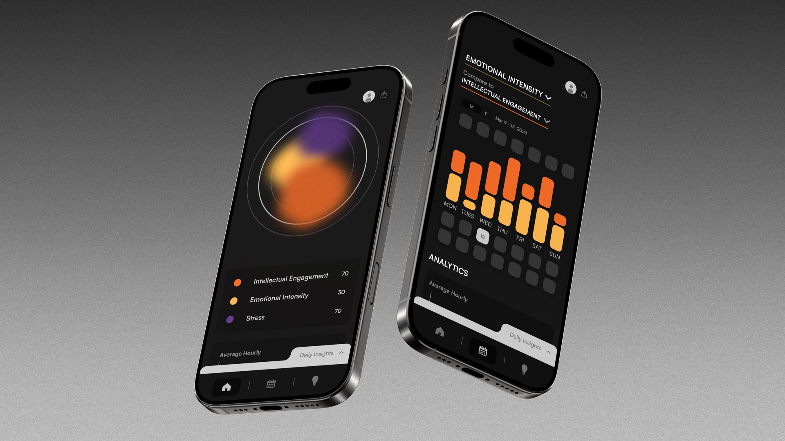
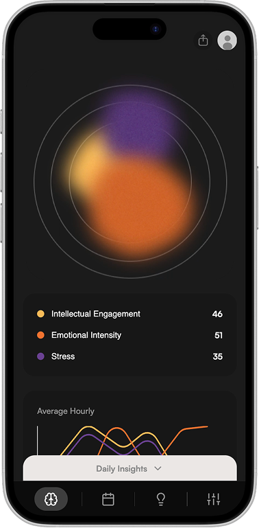
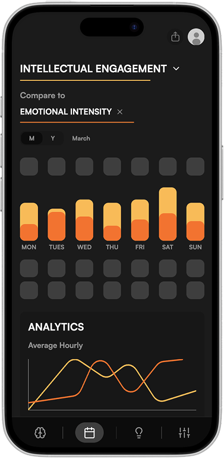
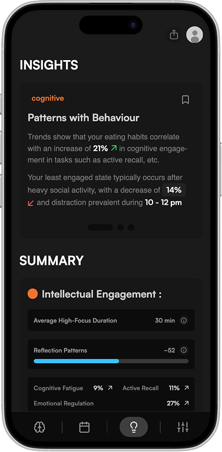
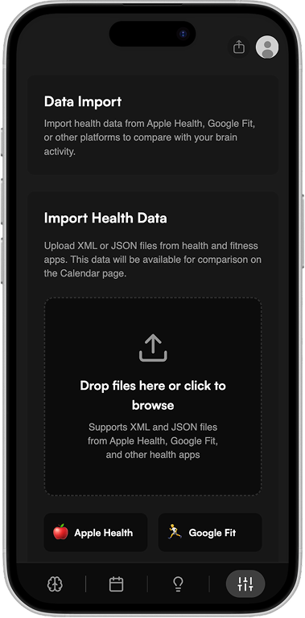
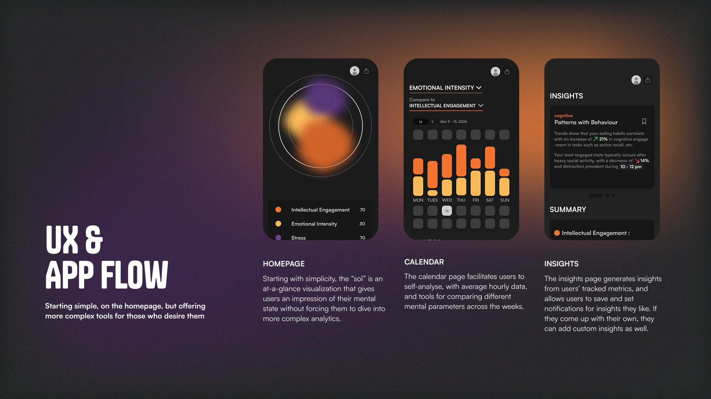
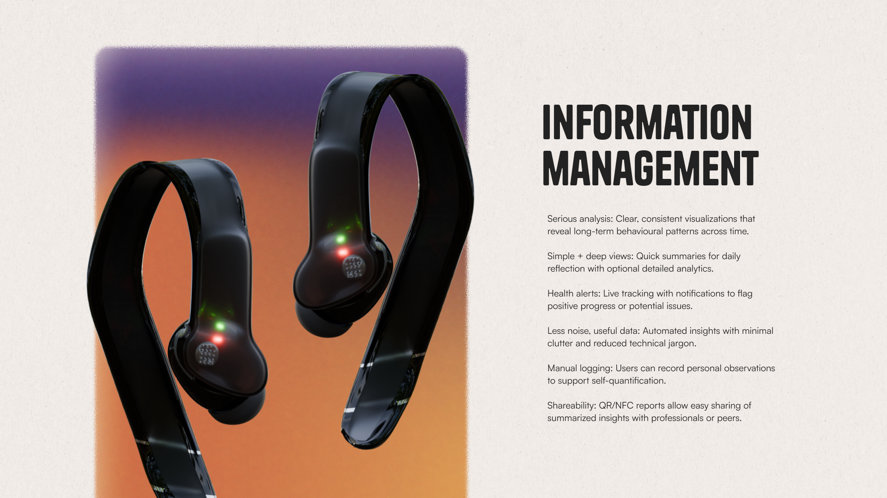

SOL | experimental health app
Hosted by Figma, this three-day designathon challenged teams of three to design a tool that tracks, measures, visualizes, or quantifies an aspect of the human sensory experience, pushing beyond current technology to imagine the future of tracking.
- Role
- ux researcher
- visual designer
- interaction designer
- Tools
- Figma
- Adobe CC
- Timeline
- 72 hours | Spring 2026




The Concept
Our team was inspired by a growing concern around artificial intelligence: while AI boosts efficiency, it can diminish critical thinking. We wanted to help people stay mentally active. Our app fosters self-awareness and emotional understanding, helping users recognize whether they are thinking with their head or feeling with their heart.
Typeface
Colour
- F27330
- F8BA58
- 6F42A8
- F1EDE9
- 808080
- 3F3F3F
- 161616
Icon
Role
My contributions centered on ideation, cognitive research, and product design. We narrowed our scope through research, seeking a sensory concept that felt meaningful to all of us, then designed a functional tool that prioritized clear information over visual polish.


Problem
An early challenge was aligning our conflicting views on which sensory type to focus on. Designing selflessly meant setting aside personal preferences to prioritize our audience, leading us to align on cognitive engagement because it resonated most with young people.